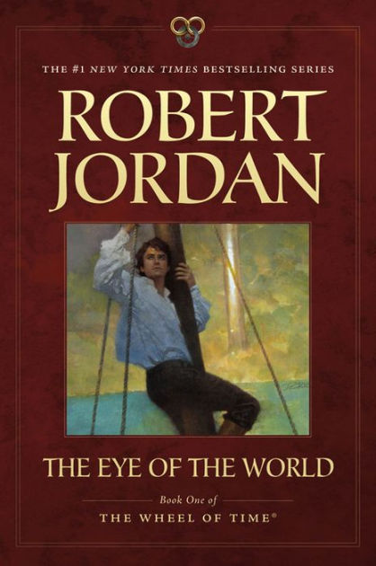
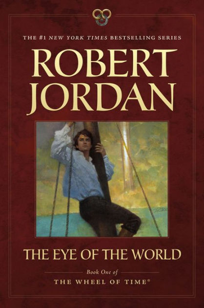
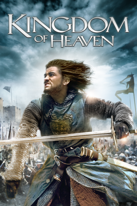
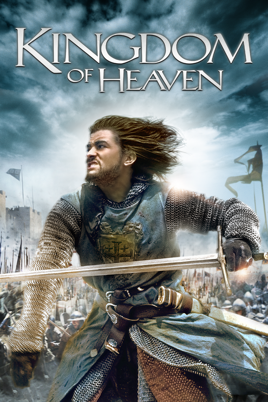
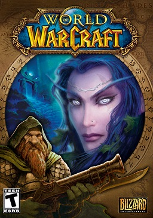
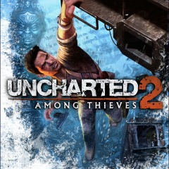
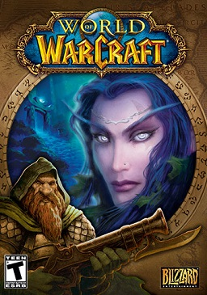
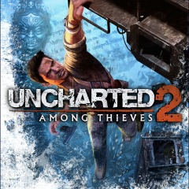

Litarature
Almost everything I enjoy reading would fall into the broad category of epic fantasy. It started in childhood with The Lord of the Rings and grew from there into a lifelong passion. So much so that if you check out the pieces of written on the projects page, they're pretty much all fantasy.
Here are some books/series I've really enjoyed recently!
 

Music
Music has been a part of my life for as long as I can remember. I've played 4 instruments throughout my life (guitar, bass, piano and trombone) but my true passion has always been in the listening of music.
It started with my dad, also a lifelong fan of music. He introduced me to the classic rock bands of his childhood at a very young age, and that introduction would provide the foundation for my own musical journey that still continues to this day. My tastes have definitely skewed towards the heavier and more progressive ends of the spectrum since then, but I still find time to appreciate where it all started.
Here are some of my favorite albums currently! (Click on them to learn more!)

Travel
One thing I enjoy doing is traveling, and although there are many places out there I would love to visit, I have been fortunate enough to have already visited some amazing places, even at my relativly young age.
I have been to 37 US states, enjoyed some more than others ( looking at you South Dakota) but my favorite travels have been to Europe. I minored in Medieval and Renaissance History at Ithaca College, and over the course of 2 trips, one to Italy in 2015, and one to the British Isles in 2016, I was able to visit many of the places I had talked about.
Some places I would love to visit someday are: Japan, Hong Kong, Dubai, and the Himalayas.
Here are some of my favorite places I've been!
TV and Movies
I've always enjoyed movies and television (I did do my undergrad in screenwriting after all.) The roots are the same as for my love of reading, The Lord of the Rings. While I never got as into the original novel as I would have liked, the film triology still holds a special place in my heart.
Here are some of my favorite movies and TV shows!


 

Video Games
I started with video games when I was quite young, less than 5 I believe, with sports games on PC. I think spending a lot of time on the computer even then started the journey that would lead me to pursuing software development.
Over time I grew to love single player games, mainly role-playing games, but I still stayed mostly on PC, although I've been known to turn on my PS4 from time-to-time.
Here are some of my favorite video games!
 


